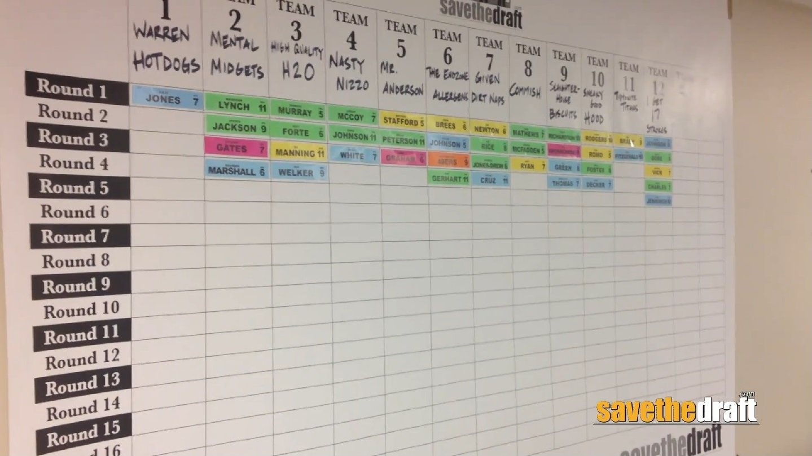
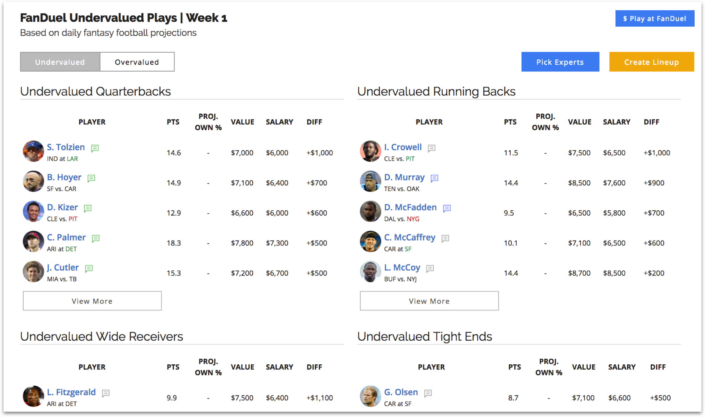

hello!
this is the homepage of my Fantasy Football website.This website was made with the intent to show off the teams I created this season of Fantasy Football ' aswell as explain some of the rules and the scoring system.
what is fantasy football?
When you play fantasy, you make a virtual roster of real NFL players, then compete against other people's rosters, based on the stats of all the players in real games.
how do I get a roster?
depending on the type of league the roster can be made in two ways.in a season long league you will have what is called a draft.Bytub a daily league you would have player picks
what is a draft?
In a draft, teams take turns selecting from a pool of eligible players. When a team selects a player, the team receives exclusive rights that player and no other team in the league may sign the player.
what are player picks?
player picks are for daily draft leagues.Each player is given a value and each team is given a budget. the team must create a roster with siad budget from any player. the key difference being you cna have the same players as other people as its not an exclusive pool.
